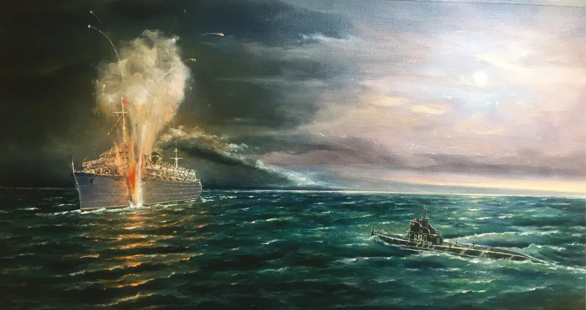

THE SINKING OF THE MV WILHELM GUSTLOFF
In January 1945, as the Eastern Front collapsed during the final months of World War II, the German military launched "Operation Hannibal"—a massive naval evacuation of civilians and military personnel fleeing the advancing Soviet Red Army. The MV Wilhelm Gustloff, a former luxury cruise liner turned transport ship, was docked in the Baltic port of Gdynia. Though designed to carry around 1,900 people, the ship was overwhelmed by a desperate sea of refugees. Official records were abandoned as people scrambled aboard; it is estimated that over 10,000 people—mostly women and children—were packed into every available square inch of the vessel.

The Fatal Light: On the night of January 30, 1945, the Gustloff headed into the freezing, storm-tossed Baltic Sea. The ship’s captain, Friedrich Petersen, made the controversial decision to stay in deep, offshore waters to avoid mines, despite the risk of submarines. In a final, fatal error, a radio message falsely reported a German minesweeper convoy in the area. To avoid a collision in the dark, Petersen ordered the ship’s navigation lights to be turned on. This illuminated the Gustloff perfectly against the black horizon, making it an easy target for the Soviet submarine S-13, which had been stalking the vessel.
Death in the Baltic: At 9:16 PM, the submarine fired three torpedoes, all of which struck the Gustloff's port side. The ship listed violently, making it nearly impossible to launch lifeboats from the high side. Panic erupted in the pitch-black, overcrowded corridors. Many passengers were crushed in the stampede or trapped behind watertight doors. Those who made it into the water faced certain death: the air temperature was -18°C (0°F), and the water was barely above freezing. The ship sank in less than 90 minutes. Despite rescue efforts by nearby German vessels, only about 1,200 people were saved.
Key Facts
Date: January 30, 1945
Location: Baltic Sea, off the coast of Pomerania
Casualties: Estimated 9,000+ dead
Cause: A torpedo attack by a Soviet submarine during a massive wartime evacuation, exacerbated by extreme overcrowding and the ship’s illumination in hostile waters.
The sinking of the Wilhelm Gustloff is the deadliest maritime disaster in human history, with an estimated 9,000 lives lost—roughly six times the death toll of the Titanic. Because it occurred during the chaotic end of the war and involved a German vessel, the tragedy was largely overlooked in global history books for decades. It remains a haunting testament to the civilian cost of total war and the vulnerability of refugee populations. Today, the wreck is a designated war grave, serving as a silent memorial to the thousands of families lost in the icy depths of the Baltic